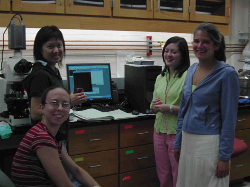
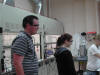
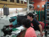
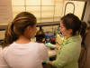
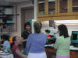
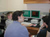
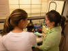
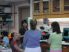
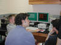

")


We have several Penn undergraduates working in the lab all year long.
For more information, feel free to contact our group by email and check the listings
in the Student Employment Office (SEO).
In addition, our lab is actively involved in RET
(Research Experience for Teachers), NSF-REU and
NBIC-REU (Research Experience for Undergraduates), and
PSSA (Penn Summer Science Academy for high school students)
programs at Penn.

From left to right: Graduate student Siying Wang (standing) with Tara
(undergraduate student at Swarthmore),
Eileen (high-school student), Katie (high-school student).
Eileen has now joined Penn as undergraduate student.
Current undergraduate students
Neil Peterman
e-mail: neil(at)sas.upenn.edu
John Bartel
e-mail: bartel(at)sas.upenn.edu
Former undergraduate students
Sam McDermott (2008)
e-mail: mcdermod(at)sas.upenn.edu
Robin Havener (2007) - Currently a graduate student at Cornell University
homepage
e-mail: rhavener(at)seas.upenn.edu
Greg Calusine (until 2007) - Currently a graduate student at UC Santa Barbara
homepage
e-mail: calusine(at)physics.ucsb.edu
Arif Shiliwala (until 2005)
Ryan Scheuermann (until 2005)
Dong Tran (until 2005)
Research Experience for Undergraduates (REU)
Summer 2008
Nancy Eisenmenger, Harvey Mudd College, e-mail: neisenmenger(at)gmail.com
 Summer 2007
Summer 2007
Kelly McCarthy, Penn State University, e-mail: kxm5002(at)psu.edu
Joey Goodell, University of Pennsylvania, e-mail: jgoodell(at)sas.upenn.edu
Summer 2006
Chloe Poston, Clark Atlanta University, e-mail: chloe.poston(at)cau.edu
Summer 2005
Adam Cohen, Bucknell University, e-mail: abcohen(at)bucknell.edu
Dan Wulin, Columbia University, e-mail: dsw2104(at)columbia.edu
Research Experience for Teachers (RET)
Summer 2004
Peter Vreeland, Upper Merion High School, e-mail: pdvreeland(at)yahoo.com
Penn Summer Science Academy (PSSA)
As a part of the PSSA program, about six high school students spend time in our lab working with other group members.
    

 

2013, Marija Drndić